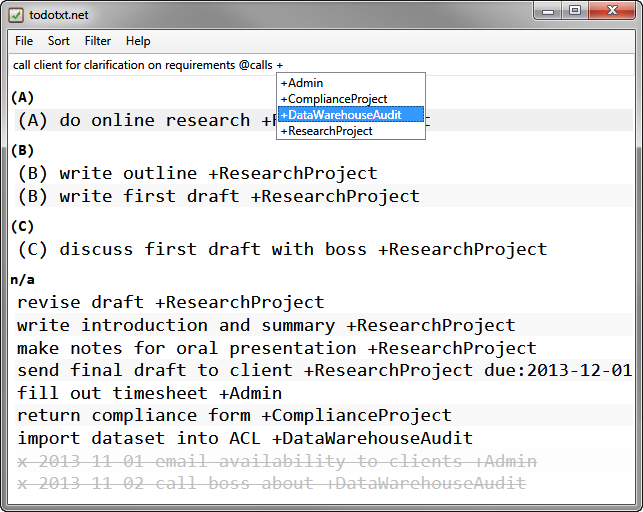
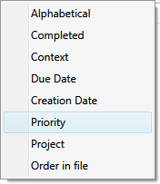

How I Organize My Todo.txt File
Using Todo.txt features effectively
I think a successful adoption of Todo.txt depends not only on the software implementations you choose, but also on how well you use the features the Todo.txt file format offers you. Todo.txt allows you to organize your tasks using projects ("+ProjectName"), priorities (A-Z), and contexts ("@Context").
I did not like using Todo.txt until I set a few rules for myself as to how I would use those three features. Once I set these rules for myself—especially how I would use priorities—Todo.txt went from being a nice idea to the most quick and powerful to-do organizer I ever used.

Next actions, or what is a to-do list for?
Rule #0: My to-do list is only going to contain tasks I plan to do in the near future.
For those tasks, all of them get entered into my list, and all of them get captured right away, as soon as I can type them in. (The only near-exception to this rule: I do store "waiting for" tasks in Todo.txt for deliverables I need from other people in order to get other tasks on my list done, too.)
For me, a task is a "next action", which means that is (a) the something that can be physically done (such as, "begin online research on Project X"), and (b) a single step in a process or project, not a project or a goal (such as "Project X" or "write research paper for client"). In practice, I do not write out every single step of a process such as building a spreadsheet report or writing a research paper. I do, however, break down multi-step projects into multiple tasks that are clearly actionable: for example, instead of writing "write research paper for client", I would break it down into several tasks: "begin online research", "write outline for report", "discuss outline with boss", "write first draft of report", "edit report", and so on. Some of these tasks will take me a few minutes to complete, while others may take me several hours (though typically not longer than one day).
Any task I am not going to do more than a week or so from now is either written down in a "someday" list (in my Notes and Drafts folder or is stashed as a tickler entry in my calendar. Those tasks may never materialize, so it is not worth tracking them in my personal system. Also, I ruthlessly delete tasks I no longer plan to do, and try to avoid entering tasks on the list I don't plan to do. In my opinion, doing so is just keeping yourself honest.
Projects
Rule #1: All my tasks are tagged with a project.
I do this for sorting purposes as well as the need to track my time by project. All my time is billed to a project, a client, or both, so it is easy for me to find a suitable project name for most tasks. I use an "+Admin" project as a catch-all for the odds and ends that don't belong in an actual work project, such as signing up for benefits.
Todotxt.net has useful hints that reduce repetitive typing for project tagging. I can sort the list by project if I wish to, but typically I don't have to because I only work on a small number of projects per day.
Priorities
Rule #2: Use only the top few priorities, A-D, and make them mean something specific and time-based.
It took me a while to figure out how to use priorities in Todo.txt, because the GTD system I (sort of) use does not really recognize priorities at all, and no other productivity system offers 26 priority levels to choose from.
I used to prioritize my tasks according to their importance to other people (my boss or the customer) or how timely I had to complete them (emergency fixes, rush jobs, client deadlines, etc.). That is the typical way to do so, I think, and it causes a few problems.
What used to happen to me is that, eventually, my task list would fill up with high-priority tasks that I could not do for whatever reason. Sometimes there were delays from other people involved in the project; sometimes some key technology was not working right; sometimes I was tired and couldn't think hard enough to work on something really taxing at the moment. Or sometimes every task on my list was high-priority, because a quarter was closing, a web site was going live, or a huge client deliverable was due.
At these points, what my task list and its priorities are telling me I cannot work on anything important, or that everything is top priority. Neither helps me decide what I should do next. In both cases, the priority system failed, which to me is worse than not helpful, it is demotivating.
The disconnect in the traditional approach to priorities is that the priorities are not your own. If you turn that approach around, however, and decide that the priorities in you task list should be your own, not other people's, and should be fluid enough to change as your situation changes, you unlock something powerful, which is the key to task management: the answer to the question "What should I be working on now?". Sure, other people influence your priorities every day, but right now, what is your next action?
I figured out from experience that I need to keep an eye on what I'm working on now (because I am often interrupted), and what I should be working on next (because I serve many different bosses and juggle many different commitments at a time).
My Todo.txt priorities are my priorities, not "how important" the task is.
Here is how I use Todo.txt priorities:
- A: The task I am working on now. My current or next action. Ideally, I will always have only one task in category A. Why do I bother with this? I get interrupted at work and have to return to what I was working on, sometimes minutes or hours later. Having my current action split out and at the top of my to-do list helps me get back on track more quickly.
- B: Tasks that I plan to do today.
- C: Tasks that I plan to do this week.
- D: Tasks reserved for next week. I tend to use this category only on Fridays, and even then almost never use it.
- E-Z: I don't use them at all. All my other tasks are uncategorized. Uncategorized tasks are typically new or low-priority tasks. I prioritize them before working on them.
Todotxt.net makes working with priorities a snap. I keep the list sorted by priority, and I change task priorities all the time. This is key to maintaining flexibility while working.

Todotxt.net makes switching task priorities insanely fast. Highlight a task and type alt+up to prioritize it; if there is no priority already, the task will shoot up to Priority A ("current action"). Then, type alt+down to deprioritize the task down to Priority B ("today") or C ("this week"). Later, when you complete a task (select it and type x), choose your next task and bump its priority up to Priority A. If you have tasks in your list that you no longer plan to do today or this week, select them and type alt+left to remove their priorities entirely. You can bump them back to "today" or "this week" or even "current action" later.
Shifting priorities around using the keyboard works much faster than setting due dates and clicking on stars or other priority markers I have used in other task lists.
Contexts
Rule #3: I don't need contexts at work so I only rarely use them.
It makes sense to add a context to a task if a particular place (@home), person (@boss), or piece of equipment (@computer) is integral to getting it done. Technology and remote work have made contexts largely irrelevant to my work life, however. Now that everything and everyone is accessible nearly all the time, I don't need to cross-reference my tasks by contexts anymore, and therefore don't use them.
There is one exception: Sometimes I use the "@waiting" context to flag things I am waiting for, but that is it. I do not mix work and personal tasks in my list, so the need for contexts in my situation is rather low.
Getting Things Done tends to make you believe that every "next action" must be tagged with both a project and a context, but that is not really true. If contexts are critical to you, use them. If not, don't. Your task list should be tailored to your needs, and help you do work, not be too much work in and of itself.
Due dates
Rule #4: Don't use due dates unless absolutely necessary.
Todo.txt doesn't truly support due dates, but the file format is flexible and Todotxt.net understands the commonly-used "due:YYYY-MM-DD" tag and flags due and past due tasks in red. I use this tag sparingly. Overall, all my tasks are due as soon as possible, and, by design, I only keep those kind of tasks (my next actions) in my Todo.txt file (see Rule 0).